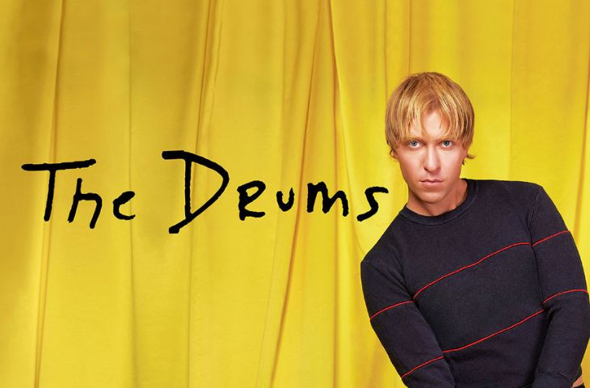

THUNDERCAT

Canciones recomendadas de Thundercat:
- Thundercat - 'Dragonball Durag'
- Thundercat - 'Drink Dat'
- Thundercat - 'Them Changes'
Aquí tienes el enlace a su música:
Perfil de Thundercat en Spotify
THE DRUMS

Canciones recomendadas de The Drums:
- The Drums - 'Book of rebelations'
- The Drums - 'Better'
- The Drums - 'Deep in my Heart'
Aqui tienes un enlace a su musica:
Perfil de The Drums en Spotify
MAC DEMARCO

Canciones recomendadas de Mac Demarco:
- Mac Demarco - 'My Kind of Woman'
- Mac Demarco - 'On the Square'
- Mac Demarco - 'Heart to Heart'
Aquí tienes el enlace a su música:
Perfil de Mac Demarco en Spotify